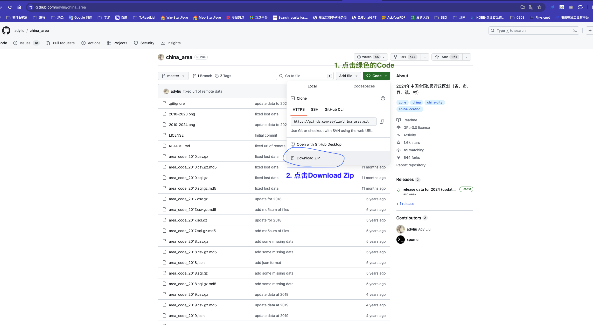
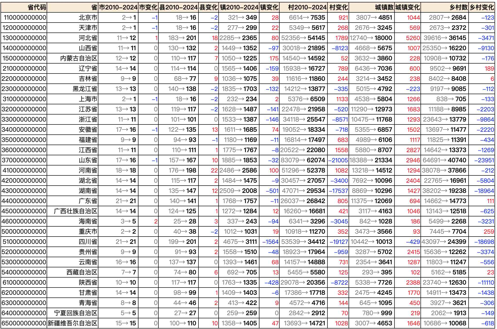
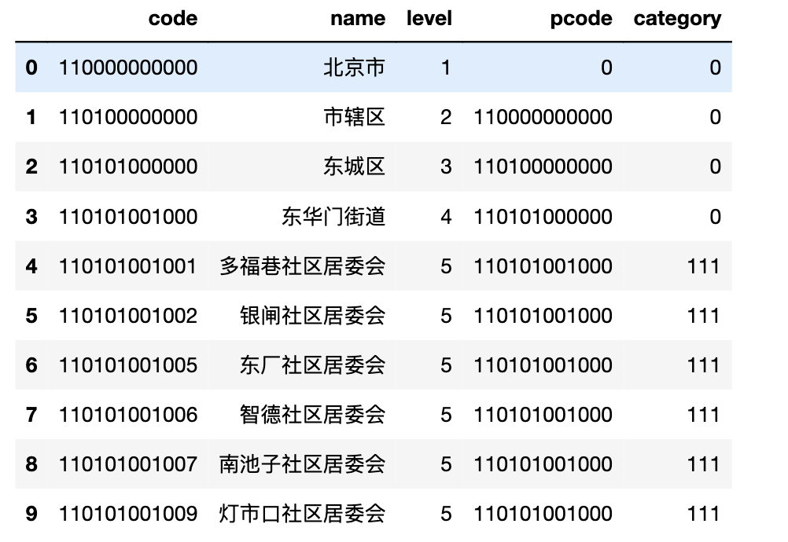
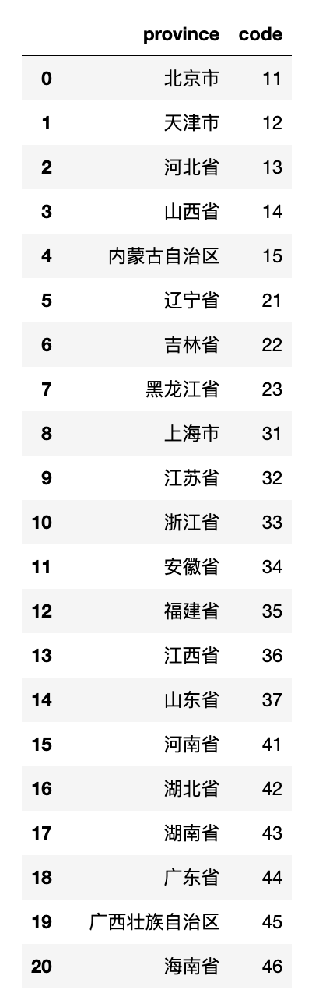
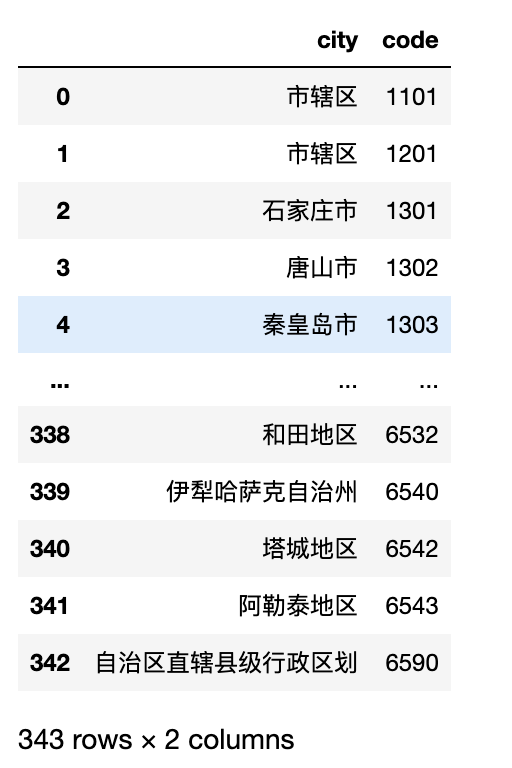
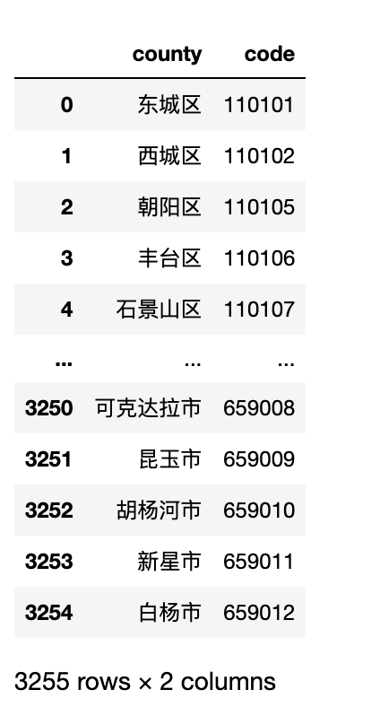
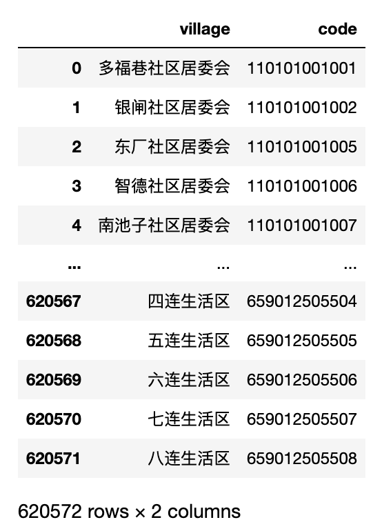
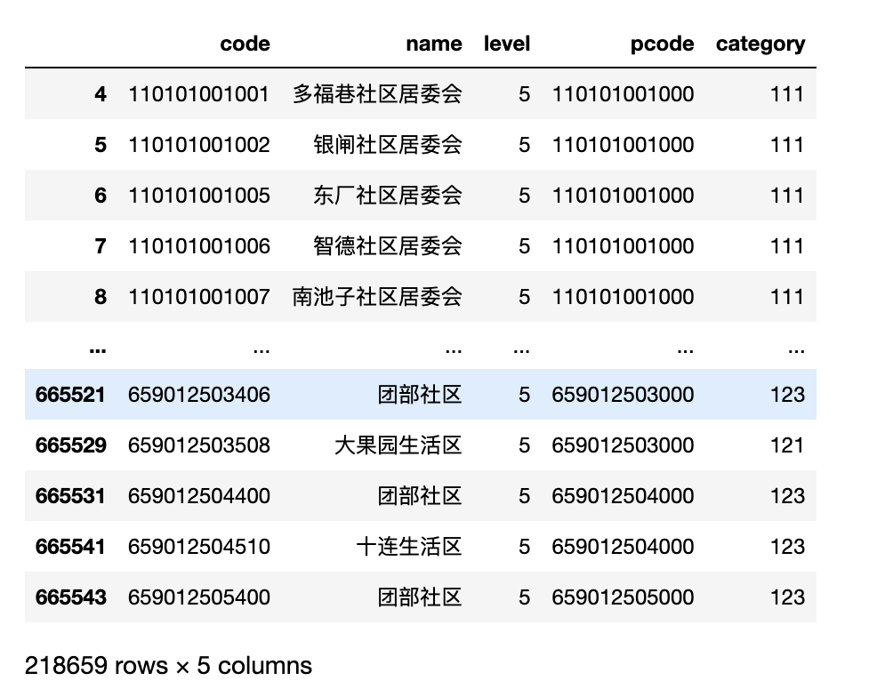
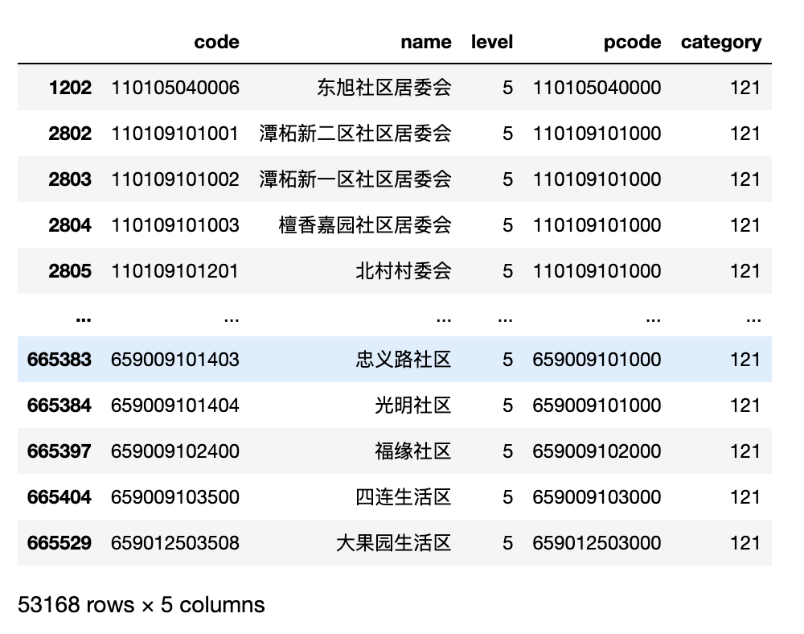
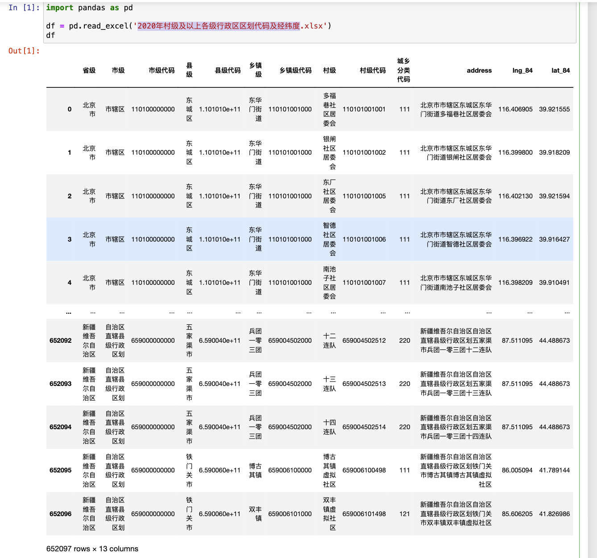

最近分享的数据集一般都含有地址信息，这就很有必要寻找中国区划数据集， 来帮助我们更好的清洗地址数据。
一、数据集概况
数据来源: 中华人民共和国国家统计局
https://www.stats.gov.cn/sj/tjbz/tjyqhdmhcxhfdm/2023/
整理者: ``https://github.com/adyliu/china_area``
数据量(2023年): 665552
数据格式: csv.gz 或 sql.gz
级别:
1级：省、直辖市、自治区
2级：地级市
3级：市辖区、县（旗）、县级市、自治县（自治旗）、特区、林区
4级：镇、乡、民族乡、县辖区、街道
5级：村、居委会
城乡分类 (1开头是城镇，2开头是乡村)
111表示主城区；
112表示城乡接合区；
121表示镇中心区；
122表示镇乡接合区；
123表示特殊区域；
210表示乡中心区；
220表示村庄
code: 共12位(省2位，市2位，县2位，镇3位，村3位)
按截图操作即可获取数据集

分省份2010-2024数据变化

二、读取数据
以 area_code_2024.csv.gz 为例， 解压后得到 area_code_2024.csv，
import pandas as pd
df = pd.read_csv('area_code_2024.csv', header=None)#, names=['name', 'level', 'code', 'class']
df.columns = ['code', 'name', 'level', 'pcode', 'category']
print(len(df))
df.head(10)
Run
665552

三、查看区划等级
区划级别:
1级：省、直辖市、自治区
2级：地级市
3级：市辖区、县（旗）、县级市、自治县（自治旗）、特区、林区
4级：镇、乡、民族乡、县辖区、街道
5级：村、居委会
3.1 省
查看所有省名字
df[df['level']==1]['name'].values
Run
array(['北京市', '天津市', '河北省', '山西省', '内蒙古自治区', '辽宁省', '吉林省', '黑龙江省', '上海市',
'江苏省', '浙江省', '安徽省', '福建省', '江西省', '山东省', '河南省', '湖北省', '湖南省',
'广东省', '广西壮族自治区', '海南省', '重庆市', '四川省', '贵州省', '云南省', '西藏自治区',
'陕西省', '甘肃省', '青海省', '宁夏回族自治区', '新疆维吾尔自治区'], dtype=object)
code: 共12位(省2位，市2位，县2位，镇3位，村3位), 查看所有省的代码
df[df['level']==1]['code'].astype(str).str[:2].values
Run
array(['11', '12', '13', '14', '15', '21', '22', '23', '31', '32', '33',
'34', '35', '36', '37', '41', '42', '43', '44', '45', '46', '50',
'51', '52', '53', '54', '61', '62', '63', '64', '65'], dtype=object)
省份名和区划代码
province_code_df = pd.DataFrame(
{'province': df[df['level']==1]['name'].values,
'code':df[df['level']==1]['code'].astype(str).str[:2].values}
)
province_code_df

3.2 市
code: 共12位(省2位，市2位，县2位，镇3位，村3位), 查看所有市的代码
city_code_df = pd.DataFrame(
{'city': df[df['level']==2]['name'].values,
'code':df[df['level']==2]['code'].astype(str).str[:4].values}
)
city_code_df

3.3 县
code: 共12位(省2位，市2位，县2位，镇3位，村3位), 查看所有县的代码
county_code_df = pd.DataFrame(
{'county': df[df['level']==3]['name'].values,
'code':df[df['level']==3]['code'].astype(str).str[:6].values}
)
county_code_df

3.4 镇
code: 共12位(省2位，市2位，县2位，镇3位，村3位), 查看所有镇的代码
zhen_code_df = pd.DataFrame(
{'zhen': df[df['level']==4]['name'].values,
'code':df[df['level']==4]['code'].astype(str).str[:9].values}
)
zhen_code_df

3.5 村
code: 共12位(省2位，市2位，县2位，镇3位，村3位), 查看所有镇的代码
village_code_df = pd.DataFrame(
{'village': df[df['level']==5]['name'].values,
'code':df[df['level']==5]['code'].astype(str).str[:12].values}
)
village_code_df

四、 城乡分类
城乡分类 (1开头是城镇，2开头是乡村)
- 111表示主城区；
- 112表示城乡接合区；
- 121表示镇中心区；
- 122表示镇乡接合区；
- 123表示特殊区域；
- 210表示乡中心区；
- 220表示村庄
查看所有的城镇
#category以1为开头，即城镇
df[df['category'].astype(str).str.startswith('1')]

查看所有的镇中心区
df[df['category']==121]

相关内容
2020年村级及以上各级行政区区划代码及经纬度.xlsx 百度网盘链接: https://pan.baidu.com/s/1uM_6quZ759RrDGzkriJtGQ?pwd=g743 提取码: g743
